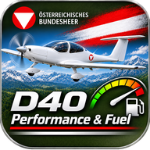

Flugzeug
Hilfsmittel zur Flugvorbereitung. Es ersetzt nicht das AFM. Der Pilot bleibt für die Prüfung aller Werte verantwortlich.
Version 0.1 (Gerüst) – Berechnungen folgen

Hilfsmittel zur Flugvorbereitung. Es ersetzt nicht das AFM. Der Pilot bleibt für die Prüfung aller Werte verantwortlich.
Version 0.1 (Gerüst) – Berechnungen folgen